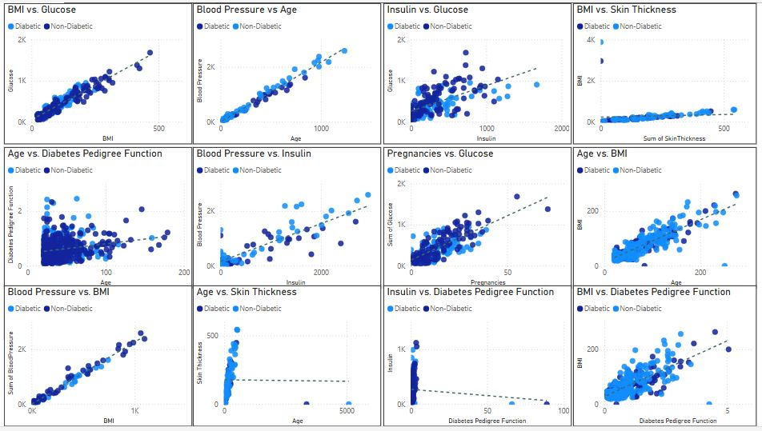
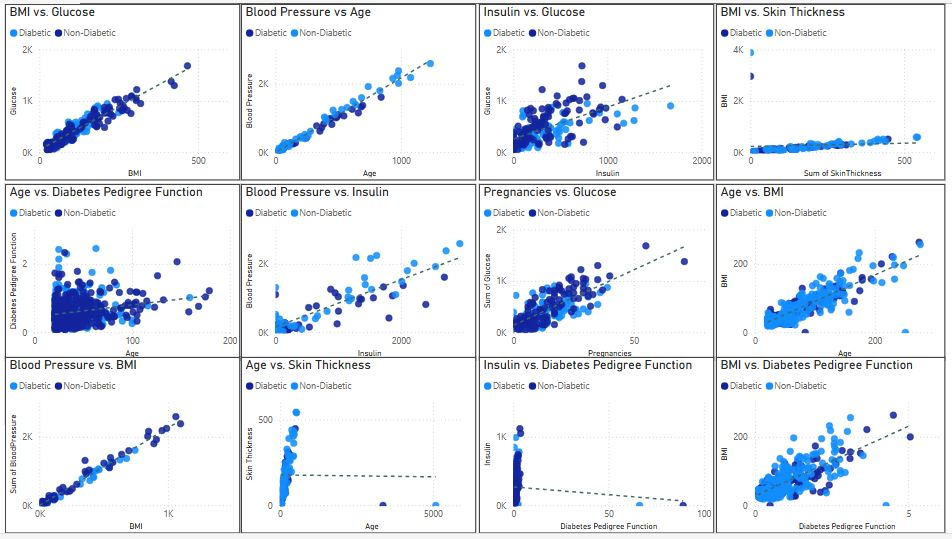

Diabetes Patients Analysis
Purpose:
This analysis provides a comprehensive examination of a diabetes dataset, focusing on uncovering patterns and insights without constructing a predictive model.
Key Objectives:
- Understand the dataset's structure, characteristics, and variables.
- Explore key trends and insights related to diabetes patients and their diagnostic measurements.
- Identify significant patterns or associations that could inform healthcare practices.
- Offer data-driven insights to assist healthcare professionals in early diagnosis and patient care.
- Provide a foundational analysis to support further research and decision-making for diabetes management.
Description:
- Data Exploration: Ensured data quality through checks for missing values and an understanding of variable distributions.
- Feature Selection: Identified significant variables using correlation analysis and feature importance techniques.
- Data Preprocessing: Addressed missing values, applied feature scaling, and encoded categorical variables to prepare the dataset for analysis.
- Exploratory Data Analysis (EDA): Leveraged visualizations and statistical tools to uncover patterns and trends within diagnostic measurements.
- Insights and Recommendations: Focused on actionable insights rather than predictions, highlighting relationships between diagnostic measurements and diabetes, aiding healthcare professionals in early detection and improved patient care.
Key Takeaways:
This foundational analysis provided valuable insights into the relationships between diagnostic factors and diabetes, offering healthcare practitioners a deeper understanding of patient diagnostics. It also sets the stage for further research, interventions, and strategic decisions in diabetes management.
Visualization:
 
